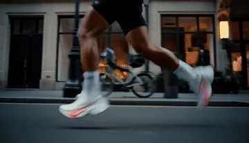
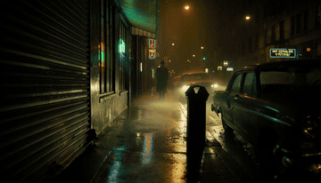
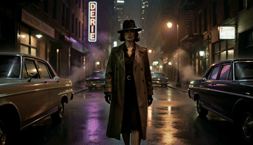
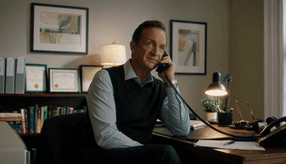

RAW vs prompt-expanded video
Each pair uses the same scenario and seed. Labels are HTML, outside the media.
Rainy bus-stop dialogue


Sneaker advertisement

Neon-rain film noir


Office-to-café phone call
